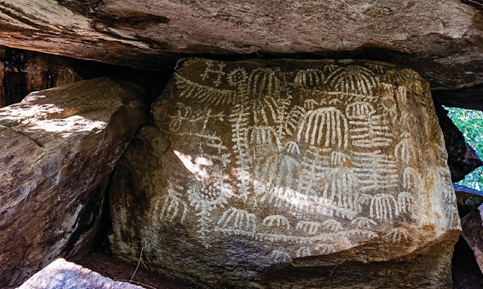

After this period, Tanzania went through two famous major visual art movements and schools. The Tingatinga Painting School and the Modern Makonde Sculpture Movement, have put Tanzania on the world art map.
The influence of Tanzania paintings and sculptures can be seen inside and outside the country. Tanzanian artists also get ideas and inspiration from other countries or various regions of the country which develop distinctive artistic traditions.


Activity 5.1
Collect rock art paintings from different sources including online, then analyse the characteristics of images seen and write your summary.
Exercise 5.1
1. Many people have visited and witnessed the Kondoa Irangi rock painting, but few understand its characteristics. Briefly explain, what are stylistic features of Kondoa Irangi rock art painting.
2. Tanzania is blessed with art movements and schools. After the rock painting period, what other art movements and schools have evolved in Tanzania?